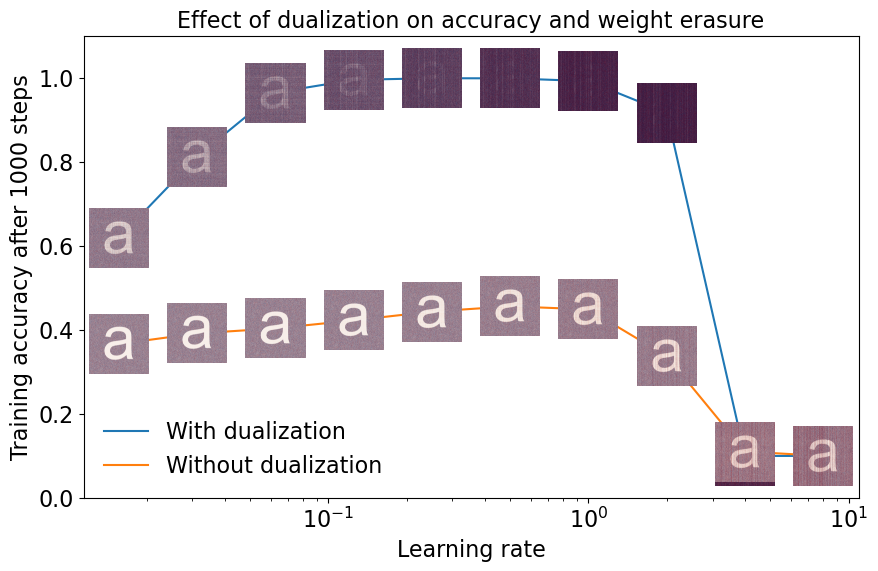

A new optimizer called Muon has recently been shown to outperform Adam in both small-scale language model training (Jordan et al., 2024), and larger-scale language model training (Moonshot AI Team, 2025) by a factor of 2x in terms of flops efficiency. For non-matrix-valued parameters in a neural network, Muon falls back to Adam. But for matrix-valued parameters, Muon first semi-orthogonalizes the gradient before subtracting it from the parameter. It can also be viewed as steepest descent under the Spectral norm (Bernstein et al., 2024).
Here, we will derive Muon’s update rule for matrix-valued parameters and discuss what makes it different from other optimizers and why it works so well.
1. Preliminaries
We consider the following optimization problem: $$\begin{equation} \min_{W \in \bm{\mathcal{W}}} \mathcal{L}(W) \end{equation}$$ where $\mathcal{L}(\cdot): \bm{\mathcal{W}} \rightarrow \mathbb{R}$ is a bounded-below and differentiable loss function, and $\bm{\mathcal{W}}$ is a matrix-valued vector space equipped with a norm $||\cdot||$ chosen a priori. If the norm admits a metric, then $\bm{\mathcal{W}}$ is a Riemannian manifold. Otherwise, it is a non-Riemannian (Finsler) manifold. Thus, not only does the choice of norm naturally lead to different optimization algorithms, but also to two classes of optimizers, preconditioners and dualizers, which we will discuss in the following sections.
In practice, $\mathcal{L}$ often does not have a simple, closed-form solution, so we resort to iterative methods of the form $$W_{t+1} = W_{t} - \lambda \widehat{\Delta W}_t,$$ where $\lambda > 0$ is a positive learning rate parameter and $-\widehat{\Delta W}_t$ is the direction of steepest descent at step $t$, $$ \begin{align} -\widehat{\Delta W}_t &= \arg\min_{\substack{\Delta W \in T_{W_t}\mathcal{W}\\ ||\Delta W|| = 1}} d\mathcal{L}_{W_t}(\Delta W)\nonumber\\ \widehat{\Delta W}_t &= \arg\max_{\substack{\Delta W \in T_{W_t}\mathcal{W}\\ ||\Delta W|| = 1}} d\mathcal{L}_{W_t}(\Delta W) \end{align} $$ where $T_{W_t}\mathcal{W}$ is the tangent space at $W_t$, $d\mathcal{L}_{W_t}(\cdot): T_{W_t}\mathcal{W} \rightarrow \mathbb{R}$ is the differential of $\mathcal{L}$ at $W_t$, and $d\mathcal{L}_{W_t}(\Delta W)$ is the directional derivative of $\mathcal{L}$ at $W_t$ in the direction of $\Delta W$.
We also often do not have access to the exact differential. However, either through, e.g., backpropagation if downstream operations are differentiable or evolutionary algorithms otherwise, we often do have access to a stochastic estimator $g_W(\cdot, \xi)_{\text{coord}}$ of the differential in standard Euclidean coordinates,
Assumption 1: Suppose that, for all $W \in \bm{\mathcal{W}}$, the differential $d\mathcal{L}_W(\cdot)$ has a standard Euclidean coordinate representation $\nabla \mathcal{L}(W)_{\text{coord}}$ such that $d\mathcal{L}_W(\cdot) = \langle \nabla \mathcal{L}(W)_{\text{coord}}, \cdot \rangle_F$. We assume that we have access to a stochastic estimator $g_W(\cdot, \xi)_{\text{coord}} = \langle \nabla \mathcal{L}(W)_\xi, \cdot \rangle_F$ of the differential in coordinate form that is unbiased and has bounded variance. That is, $$ \begin{align*} &\mathbb{E}_{\xi \sim D}[\nabla \mathcal{L}(W)_\xi] = \nabla \mathcal{L}(W)_{\text{coord}} && \forall W \in \bm{\mathcal{W}}\\ &\mathbb{E}_{\xi \sim D}[||\nabla \mathcal{L}(W)_\xi - \nabla \mathcal{L}(W)_{\text{coord}} ||_F^2] \leq \sigma^2 && \forall W \in \bm{\mathcal{W}} \end{align*} $$ where $\xi$ is a random variable sampled from a distribution $D$, $\sigma > 0$ is a positive variance parameter, $\langle \cdot, \cdot \rangle_F$ is the Frobenius inner product, and $||\cdot||_F = \sqrt{\langle \cdot, \cdot \rangle_F}$.
We also make the following standard continuity assumption on the gradient $\nabla \mathcal{L}(\cdot)$,
Assumption 2: The gradient $\nabla \mathcal{L}(\cdot)$ is Lipschitz continuous with respect to the norm $||\cdot||$ with gradient Lipschitz constant $L > 0$. That is, for all $W, Z \in \bm{\mathcal{W}}$, $$ \begin{equation} ||\nabla \mathcal{L}(W) - \nabla \mathcal{L}(Z)||^\dagger \leq L||W - Z|| \quad \forall W, Z \in \bm{\mathcal{W}} \end{equation} $$ where $||\cdot||^\dagger$ is the dual norm of $||\cdot||$.
And in the following sections, we will also discuss optimizers that precondition the gradients,
Definition 1 (Preconditioning). In an optimization algorithm, a preconditioner $\mathcal{P}(\cdot; W): T_W\mathcal{W} \rightarrow T_W\mathcal{W}$ is a point-dependent linear transform that maps empirical gradients $\nabla \mathcal{L}(W)_\xi$ to update directions $\Delta W$. That is, at any $W \in \mathcal{W}$, we have a matrix $P_W$ such that $\mathcal{P}(\nabla \mathcal{L}(W)_\xi; W) = P_W \nabla \mathcal{L}(W)_\xi$ and, $$ \begin{align*} \Delta W_t &= P_{W_t} \nabla \mathcal{L}(W_t)\\ W_{t+1} &= W_t - \lambda P_{W_t} \nabla \mathcal{L}(W_t) \end{align*} $$ It is also common to assume that we can decompose $P_W$ into a Kronecker product $P_W = L_W \otimes R_W$ (Li, 2015; Gupta et al., 2018, Surya et al., 2024), such that our update rule becomes $$ \begin{align*} \Delta W_t &= P_{W_t} \nabla \mathcal{L}(W_t)\\ \Delta W_t &= L_{W_t} \nabla \mathcal{L}(W_t) R_{W_t}\\ W_{t+1} &= W_t - \lambda L_{W_t} \nabla \mathcal{L}(W_t) R_{W_t} \end{align*} $$ We call $L_W$ and $R_W$ as the left and right preconditioners, respectively.
2. Why do Steepest Descent Under the Spectral Norm?
The geometry of $\mathcal{W}$ and the optimizer we will need both depend on the choice of norm $||\cdot||$. Our core argument is that it is most natural to do steepest descent under the spectral norm $||\cdot||_{2 \to 2}$ in the context of training the linear weights $W$ of a neural network. The spectral norm induces $\mathcal{W}$ to be non-Riemannian, and therefore, intuitions on optimization we have developed in Riemannian manifolds may not apply.
2.1. Majorization-Minimization Perspective
We can upper bound our objective function $\mathcal{L}$ by the following approximation at an arbitrary point $Z \in \bm{\mathcal{W}}$, $$ \begin{equation} \mathcal{U}(W; Z) = \mathcal{L}(Z) + \langle \nabla \mathcal{L}(Z)_\xi, W - Z \rangle_F + \frac{\lambda}{2}||W - Z||^2 \end{equation} $$ for some norm $||\cdot||$. Using standard arguments, we can show that $\mathcal{L}(W) \leq \mathcal{U}(W; Z)$ for all $W \in \bm{\mathcal{W}}$ as long as $\lambda \leq L$ (Hunter et al., 2004). Minimizing this upper bound is equivalent to minimizing the original objective function; the tighter the bound, the better. And as discussed by Carlson et al. (2015), the spectral norm gives us a tight upper bound and is thus a good choice. In fact, the spectral norm gives the tightest bound among all the Schatten-$p$ norms.
2.2 Feature Learning Perspective
Suppose that we have a linear transform $x_{l+1} = W_{l} x_{l}$ at the $l$-th layer of a neural network where $x_l \in \mathcal{R}^{d_l}$ and $x_{l+1} \in \mathcal{R}^{d_{l+1}}$ are the input and output hidden representations (or “features”), respectively, and $W_l \in \mathcal{R}^{d_{l+1} \times d_l}$ is the weight matrix. Additionally, let $\Delta x_l \in \mathcal{R}^{d_l}$, $\Delta x_{l+1} \in \mathcal{R}^{d_{l+1}}$, and $\Delta W_l \in \mathcal{R}^{d_{l+1} \times d_l}$ be their updates after a backward pass.
Ideally, we want the sizes of both the hidden representations $x_l$ and their updates $\Delta x_l$ to scale with the model width $d_l$. Otherwise, if the hidden representations are ’too small’, we are wasting capacity, in a sense; and if they are ’too large’, we are pushing the model towards the edge of numerical stability and prevent grokking (Prieto et al., 2025). Likewise, if the updates are ’too small’, they vanish at larger scales, slowing down convergence; and if they are ’too large’, they cause training instability. Yang et al. (2024) summarizes this as follows,
Desideratum 1 (Feature Learning). We desire that our features $x_l$ and feature updates $\Delta x_l$ be of size, $$ \begin{equation} ||x_l||_2 = \Theta(\sqrt{d_l})\quad\text{and}\quad ||\Delta x_l||_2 = \Theta(\sqrt{d_l})\quad\text{for all layers } l = 1, 2, \ldots, L-1 \end{equation} $$
We ensure this by imposing constraints on the size of the weights $W_l$ and their updates $\Delta W_l$:
-
From the definition of the spectral norm, we have, $$ \begin{align*} x_{l+1} &= W_l x_l\\ ||x_{l+1}||_2 &\leq ||W_l||_{2\to 2} \cdot ||x_l||_2 \end{align*} $$ Combining this with Desideratum 1, we have, $$ \begin{align*} \underbrace{||x_{l+1}||_2}_{\Theta(\sqrt{d_{l+1}})} &\leq ||W_l||_{2\to 2} \cdot \underbrace{||x_l||_2}_{\Theta(\sqrt{d_l})} \end{align*} $$ Thus the size of the weights $W_l$ must be, $$ \begin{equation} ||W_l||_{2 \to 2} = \Theta\left(\sqrt{\frac{d_{l+1}}{d_l}}\right) \end{equation} $$
-
Now let’s consider the feature updates $\Delta x_l$, $$ \begin{align*} x_{l+1} + \Delta x_{l+1} &= (W_l + \Delta W_l)(x_l + \Delta x_l)\\ \Delta x_{l+1} &= W_l \Delta x_l + \Delta W_l x_l + \Delta W_l \Delta x_l\\ ||\Delta x_{l+1}||_2 &\leq ||W_l||_{2\to 2} \cdot ||\Delta x_l||_2 + ||\Delta W_l||_{2\to 2} \cdot ||x_l||_2 + ||\Delta W_l||_{2\to 2} \cdot ||\Delta x_l||_2 \end{align*} $$ Combining this with Desideratum 1 and our result above, we have, $$ \begin{align*} \underbrace{||\Delta x_{l+1}||_2}_{\Theta(\sqrt{d_{l+1}})} &\leq \underbrace{||W_l||_{2\to 2}}_{\Theta\left(\sqrt{\frac{d_{l+1}}{d_l}}\right)} \cdot \underbrace{||\Delta x_l||_2}_{\Theta\left(\sqrt{d_l}\right)} + ||\Delta W_l||_{2\to 2} \cdot \underbrace{||x_l||_2}_{\Theta\left(\sqrt{d_l}\right)} + ||\Delta W_l||_{2\to 2} \cdot \underbrace{||\Delta x_l||_2}_{\Theta\left(\sqrt{d_l}\right)} \end{align*} $$ Thus the size of the weight updates $\Delta W_l$ must be, $$||\Delta W_l||_{2 \to 2} = \Theta\left(\sqrt{\frac{d_{l+1}}{d_l}}\right)$$
These become our Spectral Scaling Conditions (Yang et al., 2024),
Condition 1 (Spectral Scaling). The spectral norms of our weights $W_l$ and weight updates $\Delta W_l$ must be, $$ \begin{equation} ||W_l||_{2\to 2} = \Theta\left(\sqrt{\frac{d_{l+1}}{d_l}}\right)\quad\text{and}\quad||\Delta W_l||_{2\to 2} = \Theta\left(\sqrt{\frac{d_{l+1}}{d_l}}\right)\quad\text{at layers } l = 1, \ldots, L-1 \end{equation} $$
2.3 Input-Tensor Alignment Phenomenon [Under Construction]
3. Steepest Descent in Riemannian and Non-Riemannian Manifolds
Let us consider the different cases of the geometry of $\bm{\mathcal{W}}$ induced by the choice of norm $||\cdot||$.
3.1. $\bm{\mathcal{W}}$ is Euclidean
That is, we pick the Frobenius norm $||\cdot||_F$ as our norm. In this case, our points, differentials, and gradients are all already in standard Euclidean coordinates and we have a canonical bijection between differentials $d\mathcal{L}_W(\cdot) \in T_W^* \bm{\mathcal{W}}$ and gradients $\nabla \mathcal{L}(W) \in T_W \bm{\mathcal{W}}$ such that $$d\mathcal{L}_W(\cdot) = \langle \nabla \mathcal{L}(W), \cdot \rangle_F$$ Thus,
$$ \begin{align*} \widehat{\Delta W} &= \arg\max_{\substack{\Delta W \in T_W\mathcal{W}\\ ||\Delta W|| = 1}} d\mathcal{L}_W(\Delta W)\\ &= \arg\max_{\substack{\Delta W \in T_W\mathcal{W}\\ ||\Delta W|| = 1}} \langle \nabla \mathcal{L}(W), \Delta W \rangle_F\\ &= \arg\max_{\substack{\Delta W \in T_W\mathcal{W}\\ ||\Delta W|| = 1}} \langle \nabla \mathcal{L}(W)_{\text{coord}}, \Delta W \rangle_F\\ &= \frac{\nabla \mathcal{L}(W)_{\text{coord}}}{||\nabla \mathcal{L}(W)_{\text{coord}}||_F}\\ \widehat{\Delta W} &\approx \frac{\nabla \mathcal{L}(W)_\xi}{||\nabla \mathcal{L}(W)_\xi||_F}\\ \end{align*} $$
Thus, our update rule becomes, $$W_{t+1} = W_t - \hat{\lambda} \nabla \mathcal{L}(W)_\xi$$ where $\hat{\lambda} = \frac{\lambda}{||\nabla \mathcal{L}(W)_\xi||_F}$. This is simply Stochastic Gradient Descent (SGD) with an adaptive learning rate.
3.2. $\bm{\mathcal{W}}$ is a Riemannian Manifold
That is, our choice of norm $||\cdot||$ admits a metric $g_W(\cdot, \cdot): T_W \bm{\mathcal{W}} \times T_W \bm{\mathcal{W}} \rightarrow \mathbb{R}$ for each $W \in \bm{\mathcal{W}}$ such that $$||U|| = \sqrt{g_W(U, U)}\quad\text{and}\quad g_W(U, V) = \langle U, V \rangle_{G_W} = \langle GU, V \rangle_F.\quad \forall U,V \in \mathcal{W}$$ for some positive-definite matrix $G_W$ for each $W \in \bm{\mathcal{W}}$. Case 1 above is a special case of this where $G_W = I$ for all $W \in \bm{\mathcal{W}}$ and thus, $||U||_F = \sqrt{g_W(U, U)} = \sqrt{\langle U, U \rangle_F} \forall U \in \mathcal{W}$.
An interesting property of Riemannian manifolds is that we have a canonical bijection between differentials $d\mathcal{L}_W(\cdot) \in T_W^* \bm{\mathcal{W}}$ and gradients $\nabla \mathcal{L}(W) \in T_W \bm{\mathcal{W}}$ such that $$d\mathcal{L}_W(\cdot) = \langle \nabla \mathcal{L}(W), \cdot \rangle$$
Now notice that, $$ \begin{align*} d\mathcal{L}_W(\cdot) &= \langle \nabla \mathcal{L}(W), \cdot \rangle\\ d\mathcal{L}_W(\cdot) &= \langle G_W\nabla \mathcal{L}(W), \cdot \rangle_F\\ G_W\nabla \mathcal{L}(W) &= \nabla \mathcal{L}(W)_{\text{coord}}\\ \nabla \mathcal{L}(W) &= G_W^{-1} \nabla \mathcal{L}(W)_{\text{coord}}\\ \end{align*} $$
Thus,
$$ \begin{align} \widehat{\Delta W} &= \arg\max_{\substack{\Delta W \in T_W\mathcal{W}\\ ||\Delta W|| = 1}} d\mathcal{L}_W(\Delta W)\nonumber\\ &= \arg\max_{\substack{\Delta W \in T_W\mathcal{W}\\ ||\Delta W|| = 1}} \langle \nabla \mathcal{L}(W), \Delta W \rangle\nonumber\\ &= \arg\max_{\substack{\Delta W \in T_W\mathcal{W}\\ ||\Delta W|| = 1}} \langle G_W^{-1} \nabla \mathcal{L}(W)_{\text{coord}}, \Delta W \rangle\\ &= \frac{G_W^{-1} \nabla \mathcal{L}(W)_{\text{coord}}}{||G_W^{-1}\nabla \mathcal{L}(W)_{\text{coord}}||}\nonumber\\ \widehat{\Delta W} &\approx \frac{G_W^{-1}\nabla \mathcal{L}(W)_\xi}{||G_W^{-1}\nabla \mathcal{L}(W)_\xi||}\nonumber\\ \end{align} $$ where the maximum above can be achieved by aligning $\Delta W$ with $G_W^{-1}\nabla \mathcal{L}(W)_{\text{coord}}$. Thus our update rule becomes, $$W_{t+1} = W_t - \hat{\lambda} G_{W_t}^{-1}\nabla \mathcal{L}(W_t)_\xi$$ where $\hat{\lambda} = \frac{\lambda}{||G_{W_t}^{-1}\nabla \mathcal{L}(W_t)_\xi||}$. This is Riemannian Stochastic Gradient Descent (RSGD) with an adaptive learning rate. And if we let $P_W = G_W^{-1}$ be the preconditioner at point $W$, we can relate this to Preconditioned Stochastic Gradient Descent (PSGD) algorithms (Li, 2015; Pooladzandi et al., 2024).
3.3. $\bm{\mathcal{W}}$ is a Non-Riemannian Manifold
In this case, our choice of norm $||\cdot||$ does not admit a well-behaved metric $g_W(\cdot, \cdot)$ and consequently also does not admit a well-behaved inner product $\langle \cdot, \cdot \rangle$ such that $||\cdot|| = \sqrt{\langle \cdot, \cdot \rangle}$ for all $W \in \mathcal{W}$. Our differentials $d\mathcal{L}_W(\cdot)$ are still well-defined, but we no longer have the bijective relationship between differentials and gradients. And so, we do not always have a unique $\nabla \mathcal{L}(W)$ such that $d\mathcal{L}_W(\cdot) = \langle \nabla \mathcal{L}(W), \cdot \rangle$ if this inner product even exists.
While we still have access to the stochastic estimator of the differential in standard Euclidean coordinates $\nabla \mathcal{L}(W)_{\text{coord}}$ from Assumption 1, it no longer has geometric meaning by itself. That is, a simple change of coordinates no longer tells us information on the direction of steepest descent. We can, however, still use it to define a dualizer that maps the differentials we get empirically to update directions, $$ \begin{align*} \widehat{\Delta W} &= \arg\max_{\substack{\Delta W \in T_W\mathcal{W}\\ ||\Delta W|| = 1}} d\mathcal{L}_W(\Delta W)\\ &= \arg\max_{\substack{\Delta W \in T_W\mathcal{W}\\ ||\Delta W|| = 1}} \langle \nabla \mathcal{L}(W)_{\text{coord}}, \Delta W \rangle_F\\ &\approx \arg\max_{\substack{\Delta W \in T_W\mathcal{W}\\ ||\Delta W|| = 1}} \langle \nabla \mathcal{L}(W)_\xi, \Delta W \rangle_F\\ \widehat{\Delta W} &= \text{dualizer}_{||\cdot||}(\nabla \mathcal{L}(W)_\xi; W) \end{align*} $$ where $$ \begin{equation} \text{dualizer}_{||\cdot||}(\nabla \mathcal{L}(W)_\xi; W) = \arg\max_{\substack{\Delta W \in T_W\mathcal{W}\\ ||\Delta W|| = 1}} \langle \nabla \mathcal{L}(W)_\xi, \Delta W \rangle_F \end{equation} $$ and to simplify our notation, we use $\text{dualizer}_{||\cdot||}(\nabla \mathcal{L}(W)_\xi)$ if this map is independent of $W$.
4. Muon as Steepest Descent in a Non-Riemannian Manifold
4.1. The Muon Optimizer
Algorithm 1 (Muon) by Jordan et al. (2024). The weights are treated independently.
Inputs: Initial weight $W_0 \in \mathcal{W}$, and momentum term $M_0 \in \mathcal{W}$.
Parameters: Learning rate $\lambda > 0$, momentum decay $\beta \in [0, 1)$, and number of iterations $T \in \{1, 2, \ldots\}$
$\textbf{for } t = 0, 1, \ldots, T-1 \textbf{ do}\\ \text{… Compute }G_t = \nabla \mathcal{L}(W)_\xi\\ \text{… Compute }W_{t+1}\text{ and }M_{t+1}\text{ as follows:}\\ \text{……. }M_{t+1} = \beta M_t + (1 - \beta) G_t\\ \text{……. }O_{t+1} = \text{approx-orth}(M_{t+1})\\ \text{……. }W_{t+1} = W_t - \lambda O_{t+1} $
Output: $W_T \in \mathcal{W}$.
Algorithm 2 (Approximate Orthogonalization through Newton-Schulz Iteration)
def zeropower_via_newtonschulz(G: Tensor, steps: int=5): assert G.ndim == 2 a, b, c = (3.4445, -4.7750, 2.0315) X = G.bfloat16() X /= (X.norm() + 1e-7) if G.size(-2) > G.size(-1): X = X.mT for _ in range(steps): A = X @ X.mT B = b * A + c * A @ A X = a * X + B @ X if G.size(-2) > G.size(-1): X = X.mT return X
Muon (Algorithm 1) is an optimizer for matrix-valued parameters in neural networks (Jordan et al., 2024). For each weight $W \in \mathcal{W}$, it first accumulates the momentum term, then approximately semi-orthogonalizes the result using the Newton-Schulz iteration (Algorithm 2), before applying it as an update to the weights.
We can fold the momentum term into $\nabla \mathcal{L}(W)_\xi$ as it can be seen as a way to smooth out outlier empirical gradients. In fact, Kovalev (2025) has recently shown that, under Muon’s update rule, the momentum term does becomes a tighter approximation of the true gradient $\nabla \mathcal{L}(W)_{\text{coord}}$ as the number of iterations $T$ increases.
And while Muon only approximately (semi-)orthogonalizes the gradient, we have found that it still empirically performs just as well as exact orthogonalization. We will discuss this in more detail in the next sections. Muon is also not the first optimizer that does approximate orthogonalization. For example, Carlson et al.’s randomized algorithm Sketching (2015) does this explicitly, and so does Shampoo (Gupta et al., 2018), CASPR (Surya et al., 2024), and PSGD (Li, 2015) implicitly through their preconditioners. However, Muon is the first, non-randomized, preconditioner-free optimizer that explicitly aims to orthogonalize the gradient.
An interesting fact from prior work (Carlson et al., 2015; Flynn, 2017; Bernstein et al., 2024) is that the dualizer for steepest descent under the spectral norm $||\cdot||_{2 \to 2}$ is exactly this orthogonalization process, $$ \begin{equation} \text{dualizer}_{||\cdot||_{2\to 2}}(\nabla \mathcal{L}(W)_\xi) = UV^T \end{equation} $$ where $U\Sigma V^T$ is the singular value decomposition (SVD) of $\nabla \mathcal{L}(W)_\xi$. The spectral norm does not admit a well-behaved inner product. And so, Muon, and related optimizers, can be thought of as steepest descent in a non-Riemannian manifold.
In the next section, we discuss why Muon can be viewed as an instantaneous version of already existing optimizers such as Shampoo, CASPR, PSGD, and etc. We will also discuss an alternate perspective on how such preconditioning optimizers can be viewed as approximators to the dualizer of the spectral norm.
4.2 Approximating Dualization with Preconditioners
As we have shown in Section 3.2, the dualization process in Riemannian steepest descent always has an equivalent preconditioning process by letting $P_W = G_W^{-1}$ at every point $W \in \bm{\mathcal{W}}$. And likewise, if we have a preconditioning process where every $P_W$ is invertible, then it can be thought of as Riemannian steepest descent under the metric $G_W = P_W^{-1}$.
However, we may not always have an equivalent preconditioning process in non-Riemannian manifolds. And if there is, it may not be unique. Here, let’s examine multiple preconditioning processes that approximate the dualizer under the spectral norm in turn.
4.2.1. The matrix sign function. Muon’s update rule is actually equivalent to the matrix sign function,
$$ \begin{align*} \text{msign}(\nabla \mathcal{L}_\xi(W)) &= (\nabla \mathcal{L}_\xi(W) \nabla \mathcal{L}_\xi(W)^T)^{-1/2} \nabla \mathcal{L}_\xi(W)\\ &= (U\Sigma V^T V \Sigma U^T)^{-1/2} U\Sigma V^T\\ \text{msign}(\nabla \mathcal{L}_\xi(W)) &= U V^T, \end{align*} $$ where $U\Sigma V^T$ is the singular value decomposition (SVD) of $\nabla \mathcal{L}_\xi(W)$.
And if we let $P_W = (\nabla \mathcal{L}_\xi(W) \nabla \mathcal{L}_\xi(W)^T)^{-1/2}$, then we arrive at a preconditioner form of Muon’s update rule, $$ \begin{align*} W_{t+1} &= W_t - \lambda P_W \nabla \mathcal{L}_\xi(W_t)\\ &= W_t - \lambda (\nabla \mathcal{L}_\xi(W_t) \nabla \mathcal{L}_\xi(W_t)^T)^{-1/2} \nabla \mathcal{L}_\xi(W_t)\\ W_{t+1} &= W_t - \lambda UV^T \end{align*} $$
4.2.2. Shampoo. Let $G_t = \nabla \mathcal{L}_\xi(W_t)$. Then Shampoo (Gupta et al., 2018; Anil et al., 2020) has the following update rule,
$$L_t := L_{t-1} + G_t G_t^T, \quad\quad R_t := R_{t-1} + G_t^T G_t$$ $$\Delta W_t = L^{-1/4}_t G_t R^{-1/4}_t$$
As previously noted by Bernstein et al. (2024) and Anil (2024), Shampoo reduces to Muon if we disable the updates on the left and right preconditioners. That is, let $G_t = U\Sigma V^T$ be the singular value decomposition (SVD) of $G_t$ and let $$ L_t := G_t G_t^T\quad\quad R_t := G_t^T G_t $$ Then, $$\begin{aligned} \Delta W_t &= L^{-1/4}_t G_t R^{-1/4}_t\\ &= (G_t G_t^T)^{-1/4} G_t (G_t^T G_t)^{-1/4}\\ &= (U\Sigma V^T V \Sigma U^T)^{-1/4} U\Sigma V^T (V \Sigma U^T U \Sigma V^T)^{-1/4}\\ &= U\left(\frac{\Sigma}{\sqrt{\Sigma^2}} \right)V^T\\ \Delta W_t &= UV^T \end{aligned}$$ which is Muon’s update rule. $\blacksquare$
4.2.3. CASPR. Let $G_t = \nabla \mathcal{L}_\xi(W_t)$. Then CASPR (Surya et al., 2024) has the following update rule,
$$L_t := L_{t-1} + G_t G_t^T, \quad\quad R_t := R_{t-1} + G_t^T G_t$$ $$\tilde{L}_t := L_t + \epsilon I_m, \quad\quad \tilde{R}_t := R_t + \epsilon I_n$$ $$\Delta W_t = (\tilde{L}^{-1/2}_t G_t + 2 \tilde{L}^{-1/4}_t G_t \tilde{R}^{-1/4}_t + G_t \tilde{R}^{-1/2}_t)/4.$$
As previously noted by Cesista (2025), CASPR reduces to Muon if we disable the updates on the left and right preconditioners. That is, let $G_t = U\Sigma V^T$ be the singular value decomposition (SVD) of $G_t$ and let $$ L_t := G_t G_t^T\quad\quad R_t := G_t^T G_t $$ Then, $$\begin{aligned} \Delta W_t &= (\tilde{L}^{-1/2}_t G_t + 2 \tilde{L}^{-1/4}_t G_t \tilde{R}^{-1/4}_t + G_t \tilde{R}^{-1/2}_t)/4\\ &= (1/4) \cdot [(G_t G_t^T + \epsilon I_m)^{-1/2} G_t\\ &\quad\quad\quad+ 2 (G_t G_t^T + \epsilon I_m)^{-1/4} G_t (G_t^T G_t + \epsilon I_n)^{-1/4}\\ &\quad\quad\quad+ G_t (G_t^T G_t + \epsilon I_n)^{-1/2}]\\ &= (1/4) \cdot [[(U \Sigma V^T) (U \Sigma V^T)^T + \epsilon U I U^T]^{-1/2}(U \Sigma V^T)\\ &\quad\quad\quad + 2[(U \Sigma V^T) (U \Sigma V^T)^T + \epsilon U I U^T]^{-1/4}(U \Sigma V^T) [(U \Sigma V^T)^T (U \Sigma V^T) + \epsilon V I V^T]^{-1/4}\\ &\quad\quad\quad + (U \Sigma V^T) [(U \Sigma V^T)^T (U \Sigma V^T) + \epsilon V I V^T]^{-1/2}]\\ &= (1/4) \cdot [U(\Sigma(\Sigma^2 + \epsilon I)^{-1/2})V^T + U(2\Sigma(\Sigma^2 + \epsilon I)^{-1/2})V^T + U(\Sigma(\Sigma^2 + \epsilon I)^{-1/2})V^T]\\ &= (1/4) \cdot [U(1+2+1)(\Sigma(\Sigma^2 + \epsilon I)^{-1/2})V^T]\\ &= U\left(\frac{\Sigma}{\sqrt{\Sigma^2 + \epsilon I}} \right)V^T \\ \Delta W_t &\approx UV^T \end{aligned}$$ which is Muon’s update rule. $\blacksquare$
4.2.4. PSGD Family. [Under Review] This family of optimizers (Li, 2015 & 2018; Pooladzandi, 2024) explicitly tries to learn the preconditioner $\mathcal{P}(\cdot; W)$ according to several criteria to ensure training stability and, potentially, faster convergence. One of which is the noise suppression gain, $$ \frac{\mathbb{E}[||H_0^{-1}\epsilon’||_F^2]}{\mathbb{E}[||P\epsilon’||_F^2]} = \frac{\mathbb{E}[(\epsilon’)^T H_0^{-2} \epsilon’]}{\mathbb{E}[(\epsilon’)^T P^2 \epsilon’]} $$ where $\epsilon’$ is some (matrix-valued) noise term on the Hessian $H$, which aims to reduce the noise of the preconditioned gradients.
These criteria typically result in update rules that whitens, that is decorrelates, the entries of the gradient $\nabla \mathcal{L}(W)_\xi$. And so while Muon can be seen as an instantaneous version of PSGD, an important difference is that Muon merely projects the gradient to its nearest (semi-)orthogonal matrix, but not necessarily decorrelates the entries.
For future work, it would also be interesting to see what kind of update rules we get if we measure the noise suppression gain with respect to the spectral norm instead of the Frobenius norm. That is, $$ \frac{\mathbb{E}[||H_0^{-1}\epsilon’||_{2\to 2}]}{\mathbb{E}[||P\epsilon’||_{2\to 2}]} $$
5. Steepest Descent in Non-Riemannian Manifolds Induced by Schatten-$p$ Norms
Definition 2 (Schatten-$p$ Norms). The Schatten-$p$ norm of a real-valued matrix $X \in \mathbb{R}^{m \times n}$ is defined as: $$||X||_p = \left(\sum_{i=1}^{\min(m, n)} |\sigma_i(X)|^p\right)^{1/p},$$ where $\sigma_i(X)$ are the singular values of $X$. In a sense, the Schatten-$p$ norm of $X$ can be seen as the $p$-norm of its singular values.
Examples:
- $p = 1$: The Nuclear norm, $||A||_{S_1} = \sum_{i=1}^{\min(m,n)} |\sigma_i(A)| = ||A||_{\text{nuc}}$
- $p = 2$: The Frobenius norm, $||A||_{S_2} = \left(\sum_{i=1}^{\min(m,n)} |\sigma_i(A)|^2\right)^{\frac{1}{2}} = ||A||_F$
- $p = \infty$: The Spectral norm, $||A||_{S_{\infty}} = \max_{i} \sigma_i(A) = ||A||_{2 \to 2}$
A special case is when $p = 2$, and so we have the Frobenius norm. Equipping $\mathcal{W}$ with this norm gives us the standard Euclidean manifold, which is Riemannian. However, Proposition (4) below still applies.
And to find the dualizers for the Schatten-$p$ norms, we will use the following inequality.
Theorem 3 (von Neumann’s Trace Inequality). Let $A, B \in \mathbb{R}^{m \times n}$. Then the following inequality holds, $$\text{tr}(A^TB) \leq \sum_{i=1}^{\min(m,n)} \sigma_i(A) \sigma_i(B),$$ where $\sigma_i(A)$ and $\sigma_i(B)$ are the singular values of $A$ and $B$, respectively. And equality holds if and only if $A$ and $B$ share singular vectors.
5.1. Dualizers for Schatten-$p$ Norms
Here, we derive the dualizer for an arbitrary Schatten-$p$ norm $||\cdot||_{S_p}$.
Proposition 4. The dualizer for the Schatten-$p$ norm is: $$\text{dualizer}_{||\cdot||_{S_p}}(X) = U \frac{\text{diag}\left(\sigma_1(X)^{q-1}, \ldots, \sigma_{\min(m,n)}(X)^{q-1}\right)}{||X||_{S_q}^{q-1}} V^T$$ where $\frac{1}{p} + \frac{1}{q} = 1$, and $X = U\Sigma V^T$ is the singular value decomposition of $X \in T_W\mathcal{W}$ at $W \in \mathcal{W}$. Note that this dualizer is independent of $W$.
Proof: For a given $X \in T_W\mathcal{W}$ at $W \in \mathcal{W}$, let $T^* \in T_W\mathcal{W}$ be, $$ \begin{align*} T^* &= \text{dualizer}_{||\cdot||_{S_p}}(X; W)\\ T^* &= \arg\max_{\substack{T \in T_W\mathcal{W}\\ ||T||_{S_p} = 1}} \langle X, T \rangle_F\\ T^* &= \arg\max_{\substack{T \in T_W\mathcal{W}\\ ||T||_{S_p} = 1}} \text{tr}(X^T T) \end{align*} $$ Then from von Neumann’s Trace Inequality, we know that $T^*$ must share singular vectors with $X$ and that, $$T^* = \arg\max_{\substack{T \in T_W\mathcal{W}\\ ||T||_{S_p} = 1}} \sum_{i=1}^{\min(m,n)} \sigma_i(X) \sigma_i(T)$$ Thus, our optimization problem reduces to $$\arg\max_{\{\sigma_i(T)\}} \sum_{i=1}^{\min(m,n)} \sigma_i(X) \sigma_i(T) \quad\text{s.t.}\quad \sum_{i=1}^{\min(m,n)} \sigma_{i}(T)^p = 1$$ And solving via Lagrange multipliers, we have, $$\sigma_i(T) = \frac{\sigma_i(X)^{q-1}}{||X||_{S_q}^{q-1}}$$ which is indepdent of $W$. Hence, $$T^* = \text{dualizer}_{||\cdot||_{S_p}}(X) = U \frac{\text{diag}\left(\sigma_1(X)^{q-1}, \ldots, \sigma_{\min(m,n)}(X)^{q-1}\right)}{||X||_{S_q}^{q-1}} V^T\quad\blacksquare$$
5.2. Stochastic Gradient Descent and Muon as Special Cases
4.2.1. Recovering SGD. Let $p = 2$, and so we have $q = 2$ and $||\cdot||_{S_2} = ||\cdot||_F$. Thus for $\nabla \mathcal{L}(W)_\xi \in T_W\mathcal{W}$ at $W \in \mathcal{W}$, we have, $$ \begin{align*} \Delta W &= \text{dualizer}_{||\cdot||_{S_\infty}}(\nabla \mathcal{L}(W)_\xi; W)\\ &= U \frac{\text{diag}\left(\sigma_1(\nabla \mathcal{L}(W)_\xi)^{2-1}, \ldots, \sigma_{\min(m,n)}(\nabla \mathcal{L}(W)_\xi)^{2-1}\right)}{||\nabla \mathcal{L}(W)_\xi||_{S_2}^{2-1}} V^T\\ \Delta W &= \frac{\nabla \mathcal{L}(W)_\xi}{||\nabla \mathcal{L}(W)_\xi||_F} \end{align*} $$ which matches the update rule we expect from SGD.
4.2.2. Recovering Muon. Let $p = \infty$, and so we have $q = 1$ and $||\cdot||_{S_\infty} = ||\cdot||_{2\to 2}$. Thus for $\nabla \mathcal{L}(W)_\xi \in T_W\mathcal{W}$ at $W \in \mathcal{W}$, we have, $$ \begin{align*} \Delta W &= \text{dualizer}_{||\cdot||_{2 \to 2}}(\nabla \mathcal{L}(W)_\xi; W)\\ &= U \frac{\text{diag}\left(\sigma_1(\nabla \mathcal{L}(W)_\xi)^{1-1}, \ldots, \sigma_{\min(m,n)}(X)^{1-1}\right)}{||X||_{S_1}^{1-1}} V^T\\ \Delta W &= UV^T \end{align*} $$ which matches the update rule we expect from Muon.
5.3. Why Muon Still Works Well in Practice Despite the Approximate Orthogonalization
We observe that, qualitatively, steepest descent under the Schatten-$p$ norm very quickly converges to steepest descent under the spectral norm as $p$ approaches $\infty$. This is probably why optimizers like Sketching and Muon work well in practice despite not perfectly orthogonalizing the gradients.
To support this, we show that the (1) variance of dualized singular values, and the (2) relative size, and (3) stable rank of the dualized gradients under the Schatten-$p$ norm quadratically converges to those of the Spectral norm as $p$ approaches $\infty$. And in fact, at $p = 32$, the results are already very close to those of the Spectral norm.
5.3.1. On the variance of dualized singular values
Proposition 5. The variance of the dualized singular values under the Schatten-$p$ Norm converges quadratically to $0$ as $p$ approaches $\infty$.
Proof: Let $t_i$ be the $i$-th dualized singular value. From Proposition 4 earlier, we have $$ \begin{align*} t_i &= \left(\frac{\sigma_i(\nabla L(W_l))}{||\nabla L(W_l)||_{S_q}}\right)^{q-1}\\ t_i &= \exp\left((q-1)\ln\frac{\sigma_i(\nabla L(W_l))}{||\nabla L(W_l)||_{S_q}}\right)\\ t_i &\approx 1 + (q-1)\ln\frac{\sigma_i(\nabla L(W_l))}{||\nabla L(W_l)||_{S_q}} \end{align*} $$ where the last line follows from first-order Taylor approximation of $t_i$. Thus, the mean and variance are: $$ \begin{align*} \mathbb{E}[t_i] &\approx 1 + (q-1)\mathbb{E}\left[\ln\frac{\sigma_i(\nabla L(W_l))}{||\nabla L(W_l)||_{S_q}}\right]\\ \mathbb{E}[t_i] &\approx 1 + (q-1)\ln\frac{\mathbb{E}[\sigma_i(\nabla L(W_l))]}{||\nabla L(W_l)||_{S_q}}\\ t_i - \mathbb{E}[t_i] &\approx (q-1)\ln\left[\sigma_i(\nabla L(W_l)) - \mathbb{E}[\sigma_i(\nabla L(W_l))]\right]\\ Var[t_i] &\approx (q-1)^2\mathbb{E}\left[\ln^2\left[\sigma_i(\nabla L(W_l)) - \mathbb{E}[\sigma_i(\nabla L(W_l))]\right]\right]\\ Var[t_i] &\approx \frac{1}{(p-1)^2}\mathbb{E}\left[\ln^2\left[\sigma_i(\nabla L(W_l)) - \mathbb{E}[\sigma_i(\nabla L(W_l))]\right]\right] \end{align*} $$ Hence, the variance of the dualized singular values converges quadratically to $0$ as $p$ approaches $\infty$.
Empirically, we can see this in the following plot. And at $p = 32$, the variance of the resulting singular values are already close to $0$.

5.3.2. On the relative size and stable rank of gradients
Definition 6: Relative Size of a Gradient. Given a norm $||\cdot||$ chosen a priori, the relative size of a gradient-update $\Delta W$ relative to the parameter matrix $W$ is defined as: $$\text{relsize}(\Delta W) = \frac{||\Delta W||}{||W||}$$
Definition 7: Stable Rank. The stable rank of a matrix $A$ is defined as $$srank(A) = \frac{||A||_F^2}{||A||_{2 \to 2}^2}$$
As we can see in the following plot, the raw gradients have very low-stable rank. But the stable rank of the gradients post-dualization under the Schatten-$p$ norm converges very quickly to that of the Spectral norm as $p$ approaches $\infty$.

One can interpret this as, for some large enough $p$, the dualized gradient is already very close to being “maximal” in a sense. And increasing $p$ further would only offer rapidly diminishing returns.
A side-effect of this is that it allows the model parameters to “escape” the small region around the initialization and explore the parameter space more effectively, contrary to prior work on SGD and Adam optimizers (Lee et al., 2020; Jesus et al., 2021). This phenomenon is known as weight erasure (Bernstein, 2024).

6. Optimizing Muon’s Newton-Schulz Coefficients [Under Construction]
7. Convergence Guarantees [Under Construction]
How to Cite
@misc{cesista2025sdnr,
author = {Franz Louis Cesista},
title = {Muon and a Selective Survey on Steepest Descent in Riemannian and Non-Riemannian Manifolds},
year = {2025},
url = {http://leloykun.github.io/ponder/steepest-descent-non-riemannian/},
}
References
- Keller Jordan and Yuchen Jin and Vlado Boza and You Jiacheng and Franz Cesista and Laker Newhouse and Jeremy Bernstein (2024). Muon: An optimizer for hidden layers in neural networks. URL https://kellerjordan.github.io/posts/muon/
- Keller Jordan, Yuchen Jin, Vlado Boza, Jiacheng You, Franz Cesista, Laker Newhouse, and Jeremy Bernstein (2024). Muon: An optimizer for hidden layers in neural networks. Available at: https://kellerjordan.github.io/posts/muon/.
- Moonshot AI Team (2025). Muon is Scalable for LLM Training. URL https://arxiv.org/abs/2502.16982
- Jeremy Bernstein and Laker Newhouse. “Old optimizer, new norm: An anthology.” arXiv preprint arXiv:2409.20325 (2024).
- Jeremy Bernstein, Laker Newhouse (2024). Modular Duality in Deep Learning. URL https://arxiv.org/abs/2410.21265
- Jeremy Bernstein (2024). “Weight erasure.” Available at: https://docs.modula.systems/examples/weight-erasure/
- Xi-Lin Li (2015). Preconditioned Stochastic Gradient Descent. URL https://arxiv.org/abs/1512.04202
- Xi-Lin Li (2018). Preconditioner on Matrix Lie Group for SGD. URL https://arxiv.org/abs/1809.10232
- Omead Pooladzandi, Xi-Lin Li (2024). Curvature-Informed SGD via General Purpose Lie-Group Preconditioners. URL https://arxiv.org/abs/2402.04553
- David E Carlson, Edo Collins, Ya-Ping Hsieh, Lawrence Carin, Volkan Cevher. Preconditioned Spectral Descent for Deep Learning. In Advances in Neural Information Processing Systems 28 (NIPS 2015), 2015. URL https://proceedings.neurips.cc/paper_files/paper/2015/hash/f50a6c02a3fc5a3a5d4d9391f05f3efc-Abstract.html
- Thomas Flynn. The duality structure gradient descent algorithm: Analysis and applications to neural networks. arXiv:1708.00523, 2017. URL https://arxiv.org/abs/1708.00523
- Hunter, D. R. and Lange, K. (2004). A tutorial on MM algorithms. The American Statistician, 58(1):30–37.
- Lucas Prieto, Melih Barsbey, Pedro A.M. Mediano, Tolga Birdal (2025). Grokking at the Edge of Numerical Stability. URL https://arxiv.org/abs/2501.04697
- Vineet Gupta, Tomer Koren, Yoram Singer (2018). Shampoo: Preconditioned Stochastic Tensor Optimization. URL https://arxiv.org/abs/1802.09568
- Rohan Anil et al. “Scalable second order optimization for deep learning.” arXiv preprint arXiv:2002.09018 (2020).
- Surya, S., Duvvuri, Devvrit, F., Anil, R., Hsieh, C., & Dhillon, I.S. (2024). Combining Axes Preconditioners through Kronecker Approximation for Deep Learning. International Conference on Learning Representations.
- Franz Louis Cesista (2025). {CASPR} Without Accumulation is {M}uon. URL https://leloykun.github.io/ponder/caspr-wo-accum-is-muon/
- Rohan Anil. “Just some fun linear algebra.” X post, 6 Oct. 2024, Available at: https://x.com/_arohan_/status/1843050297985466565.
- Dmitry Kovalev (2025). Understanding Gradient Orthogonalization for Deep Learning via Non-Euclidean Trust-Region Optimization. Available at: https://arxiv.org/abs/2503.12645
- Lee, Jaehoon, et al. “Wide Neural Networks of Any Depth Evolve as Linear Models under Gradient Descent.” Journal of Statistical Mechanics: Theory and Experiment, vol. 2020, no. 12, Dec. 2020, p. 124002. Crossref, https://doi.org/10.1088/1742-5468/abc62b.
- Jesus, Ricardo J., et al. “Effect of Initial Configuration of Weights on Training and Function of Artificial Neural Networks.” Mathematics, vol. 9, no. 18, Sept. 2021, p. 2246. Crossref, https://doi.org/10.3390/math9182246.